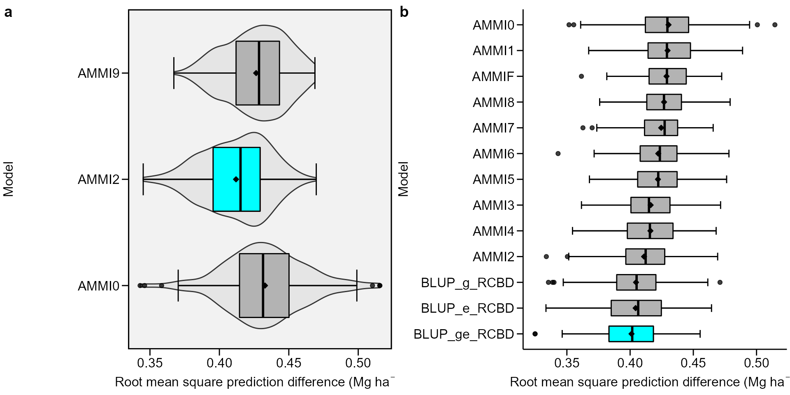

Cross-validation procedures for AMMI and BLUP
Tiago Olivoto
2021-12-19
Source:vignettes/vignettes_cross-validation.Rmd
vignettes_cross-validation.RmdGetting started
In this section, we will use the data in data_ge. For more information, please, see ?data_ge. Other data sets can be used provided that the following columns are in the dataset: environment, genotype, block/replicate and response variable(s). See the section Rendering engine to know how HTML tables were generated.
Predictive accuracy
The predictive accucary of both AMMI and BLUP models may be obtained using a cross-validation procedure implemented by the functions cv_ammif() and cv_blup() The cv_ammif() function provides a complete cross-validation procedure for all member of AMMI model family (AMMI0-AMMIF) using replicate-based data, according to the diagram below. Automatically the first validation is carried out considering the AMMIF (all possible axis used). Considering this model, the original data set is split up into two sets: training set and validation set.

Diagram for cross-validation of AMMI models.
The training set has all combinations (genotype x environment) with the number of replications informed in nrepval argument. The validation set has one replication that were not included in the training set. The splitting of the data set into training and validation sets depends on the design considered. For a Randomized Complete Block Design (default option) and the procedure we used in the article, completely blocks are randomly selected within environments, as suggested by Piepho (1994). The remaining block serves as validation data. If design = "CRD" is informed, thus declaring that a completely randomized design was used, single observations are randomized for each treatment (genotype-by-environment combination). This is the same procedure suggested by Gauch and Zobel (1988). The estimated values for each member of the AMMI model family in each re-sampling cycle are compared with the observed values in the validation data. Then, the Root Mean Square Prediction Difference is computed as follows:
\[ RMSPD = {\left[ {\left( {\sum\nolimits_{i = 1}^n {{{\left( {{{\hat y}_{ij}} - {y_{ij}}} \right)}^2}} } \right)/n} \right]^{0.5}} \]
where \(\widehat{y}_{ij}\) is the model predicted value; and \(y_{ij}\) is the observed value in the validation set. The number of random selection of blocks/replicates (n) is defined in the argument nboot. At the end of the n cycles for all models, a list with all estimated RMSPD and the average of RMSPD is returned.
Cross-validation for AMMI model
The following code computes the cross-validation of the oat data using the AMMI model. There are two options for doing that. The first is to perform the cross-validation for a specific member of the AMMI-family model. The second (and more realistic) is to perform the cross-validation for all AMMI-family models in the same procedure.
Declaring the number of axes
The function cv_ammi() is used to compute a cross-validation procedure for the AMMI0, AMMI2 and AMMIF (9 axes) models.
AMMI0 to AMMIF
The function cv_ammif() is used to compute a cross-validation procedure for all members of the AMMI-family model. In this case, AMMI0-AMMI9.
AMMIF <- cv_ammif(data_ge, ENV, GEN, REP, GY)Cross-validation for BLUP prediction
The function cv_blup() provides a cross-validation of replicate-based data using mixed models. By default, complete blocks are randomly selected for each environment. Using the argument random it is possible to chose the random effects of the model, as shown bellow.
Genotype and genotype-vs-environment as random effects
BLUP_g <- cv_blup(data_ge, ENV, GEN, REP, GY, random = "gen")Environment, replication-within-environment and interaction as random effects
BLUP_e <- cv_blup(data_ge, ENV, GEN, REP, GY, random = "env")A random model (all terms as random effects)
BLUP_ge <- cv_blup(data_ge, ENV, GEN, REP, GY, random = "all")Printing the means of RMSPD estimates
bind_mod <- bind_cv(AMMIF, BLUP_g, bind = "means")
print_table(bind_mod$RMSPD)The table above showns the descriptive statistics (mean, standard deviation, standar error of the mean, and quantiles 2.5% and 97.5%) of the 100 RMSPD estimates for each model, and are presented from the most accurate model (smallest RMSPD mean) to the least accurate model (highest RMSPD mean).
Plotting the RMSPD values
The values of the RMSPD estimates obtained in the cross-validation process may be plotted using the functionplot().
bind1 <- bind_cv(AMMI0, AMMI2, AMMI9)
bind2 <- bind_cv(AMMIF, BLUP_g, BLUP_e, BLUP_ge)
a <- plot(bind1, violin = TRUE)
b <- plot(bind2,
width.boxplot = 0.6,
order_box = TRUE,
plot_theme = theme_metan_minimal())
arrange_ggplot(a, b, tag_levels = "a")
Six statistics are shown in this boxplot. The mean (black rhombus), the median (black line), the lower and upper hinges that correspond sto the first and third quartiles (the 25th and 75th percentiles, respectively). The upper whisker extends from the hinge to the largest value no further than \(1.5\times{IQR}\) from the hinge (where IQR is the inter-quartile range). The lower whisker extends from the hinge to the smallest value at most \(1.5\times{IQR}\) of the hinge. Data beyond the end of the whiskers are considered outlying points. If the condition violin = TRUE, a violin plot is added along with the boxplot. A violin plot is a compact display of a continuous distribution displayed in the same way as a boxplot.
Rendering engine
This vignette was built with pkgdown. All tables were produced with the package DT using the following function.
library(DT) # Used to make the tables
# Function to make HTML tables
print_table <- function(table, rownames = FALSE, digits = 3, ...){
df <- datatable(table, rownames = rownames, extensions = 'Buttons',
options = list(scrollX = TRUE,
dom = '<<t>Bp>',
buttons = c('copy', 'excel', 'pdf', 'print')), ...)
num_cols <- c(as.numeric(which(sapply(table, class) == "numeric")))
if(length(num_cols) > 0){
formatSignif(df, columns = num_cols, digits = digits)
} else{
df
}
}